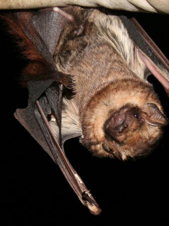
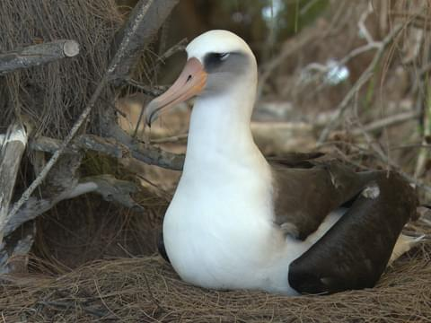
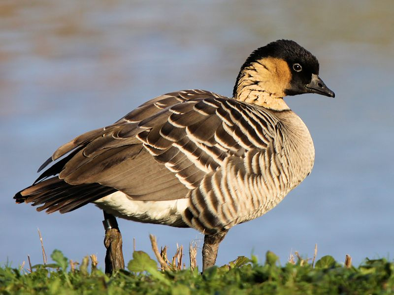
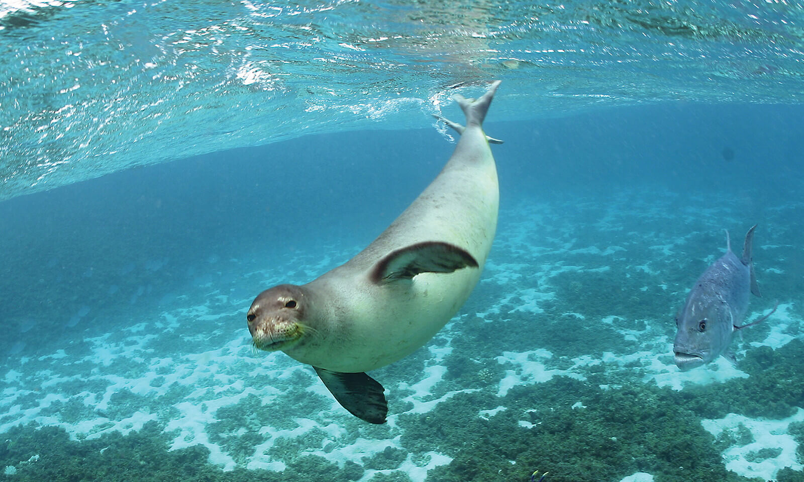

Hawai'i has a rich wildlife with an estimation of over 21000 species in its rainforest. Hawai'i has a very rich marine life, including coral reef, dolphins, whales, etc.
The Hawaiian Hoary bat is one of the last two remaining native mammals of Hawai'i. The Hoary Bat is Hawai'i's only native land animal. There are hoary bats in North and South America, but the Hawaiian hoary bat belongs to solely the islands of Hawai'i. These bats are typically brown in colour. Its population sizes are unknown and it is an endangered species.
The Laysan albatross is a very large seabird that has pointed wings and dark shading on its face. The Northwestern Hawaiian islands are home to about 99% of the Laysan albatross's population. This bird is close to becoming an endangered animal due to climate change.
Also known as the Hawaiian Goose, it is an endangered animal. The hunting of this goose has had its population decrease heavily. Due to this, the hunting of this goose was prohibited, but its population still declined to 30 by 1952. In current times, its population is now more than 1000 people and is now increasing in population. This Hawaiian goose is less aquatic than most geese and doesn't migrate
Along with the Hawaiian Hoary bat, it is one of the last two mammals native to Hawai'i. It's usually seen alone or in small groups. With a population of 1500, these seals are the most endangered seals in the USA. The diet of a monk seal depends on its location, age, and sex.
There are many non-native animals in Hawai'i that were physically brought on to the islands. An example would be pigs. Pigs used to hold cultural value for Hawaiians. In 1778, the Europeans introduced Hawaiians to their European pigs, which were different to the pigs in Hawai'i. These pigs caused a lot of damage to the environment as they were set free to roam around. As of today, most pigs you see in Hawai'i are descendants of European stock. The reason why there are such few native species in Hawai'i is because of these invasive species the Europeans brought in and this ruined their ecosystem slowly.